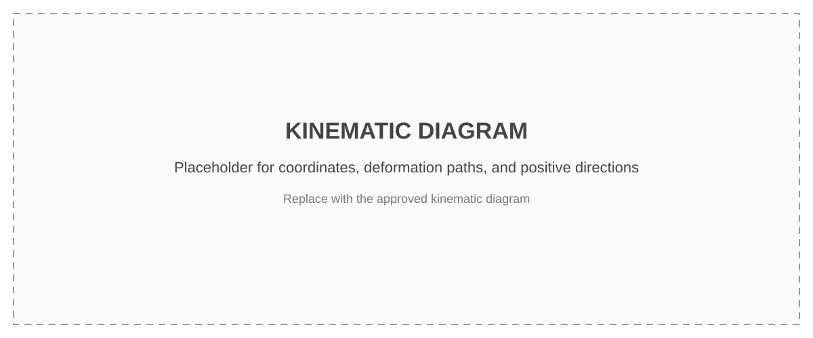

Analytical Derivation of the Model
Newton Analytical Derivation
Placeholder: explain why six generalized coordinates are retained, which physical effects are included or excluded, the origin of the model parameters, and the analytical/reference sources used for this derivation.
Assumptions
- Six independent generalized coordinates are retained: motor rotation, coupling rotation, screw rotation, support-bearing rotation, screw axial translation, and nut/stage translation.
- The torsional and axial structural elements are represented by linear spring-damper pairs.
- The screw-nut interface remains compliant rather than being imposed as a rigid kinematic constraint.
- Guideway, screw-nut, and support-bearing nonlinear friction reactions are set to zero in the frictionless baseline.
- The sinusoidal detent torque is linearized about the equilibrium for the linear state-space model.
- Structural and electromagnetic damping remain in the model when nonlinear friction is set to zero.
Free-Body Diagram

| Sketch label | Force or torque | Where it lives in the model |
|---|---|---|
| 1 | \(T_{EM}\) | \(k_{EM}(\theta_{cmd}-\theta_m)\), split between \(\mathbf G\) and \(\mathbf K(1,1)\) |
| 2 | \(T_{det}\) | \(-\mathbf e_mT_d\sin(4N_r\theta_m)\), nonlinear; tangent \(k_d\) deliberately not in \(\mathbf K\) |
| 3, 4 | \(T_{c,react}\) / \(T_{c,drive}\) | The two ends of \(k_c,c_c\) in \(\mathbf K,\mathbf C\), rows 1-2 |
| 5, 6 | \(T_{s1,react}\) / \(T_{s1,drive}\) | \(k_{s1},c_{s1}\), rows 2-3 |
| 8, 9 | \(T_{s2,react}\) / \(T_{s2,drive}\) | \(k_{s2},c_{s2}\), rows 3-4 |
| 7 | \(T_{fric,nut}\) | LuGre port nut, \(\mathbf J_{nut}=[0,0,r,0,1,-1]\) |
| 12, 13 | \(F_{ax,drive}\) / \(F_{ax,react}\) | \(k_{nut}\rho_{nut}+c_{nut}v_{nut}\), using the same \(\mathbf J_{nut}\) |
| 10 | \(T_{fric,sb}\) | LuGre port sb, \(\mathbf J_{sb}=[0,0,0,1,0,0]\) |
| 11 | \(F_{fric,s}\) | LuGre port way, \(\mathbf J_{way}=[0,0,0,0,0,1]\) |
| 10 | \(F_{ext}\) | No counterpart in the current model |
Step 3
Coordinates and sign convention
Positive screw rotation drives positive axial translation. Define the lead conversion
The generalized coordinate vector is
| Coordinate | Body | Inertia | Positive direction |
|---|---|---|---|
| \(\theta_m\) | Motor rotor | \(I_m\) | Drive rotation |
| \(\theta_c\) | Bellows coupling | \(I_c\) | Drive rotation |
| \(\theta_s\) | Screw rotation | \(I_s\) | Rotation producing \(+x\) |
| \(\theta_{sb}\) | Support-bearing ring | \(I_{sb}\) | Drive rotation |
| \(x_s\) | Screw axial motion | \(M_{screw}\) | Positive stage travel |
| \(x_n\) | Nut and stage | \(M_s\) | Positive stage travel |
The screw-nut deformation is defined directly as
Step 4
Torque and force expressions
Motor torque
The commanded motor angle acts through the linearized electromagnetic stiffness. Rotor damping is implemented relative to the fixed frame.
This comes into play later when simulating the system.
Linearized detent torque
Torsional spring-damper torques
Axial forces
Step 5
Apply Newton's second law
For each retained rotational or translational body, sum the applied torques or forces in the chosen positive direction:
Full torque and force balances
Every internal element appears on two bodies with equal magnitude and opposite sign.
Substituting and expanding the element laws
Substituting Equations (4)-(7) into the six balances gives
All terms multiplying \(\mathbf q\), \(\dot{\mathbf q}\), and \(\ddot{\mathbf q}\) are moved to the left. The prescribed command term \(k_{EM}\theta_{cmd}\) remains on the right.
Step 6
Collect the second-order matrix model
Mass, damping, stiffness, and command matrices
Mass matrix
Damping matrix
Stiffness matrix
Command distribution
Why the detent term appears in the stiffness matrix
For this linear Newton/state-space model, the nonlinear detent torque is linearized at \(\theta_m=0\):
The tangent \(k_d\) therefore contributes to \(\mathbf K(1,1)\), highlighted in orange above. In the nonlinear friction model, the full sine torque is evaluated explicitly and \(k_d\) is omitted from the structural \(\mathbf K\) to avoid counting the detent torque twice.
Step 7
Convert to first-order state space
Define the twelve-state vector
Solving Equation (10) for acceleration gives
Therefore,
For stage displacement as the output,
Lagrange Analytical Derivation
The Lagrange route independently reconstructs the same frictionless six-coordinate model from kinetic energy, potential energy, and Rayleigh dissipation. Agreement with the Newton derivation checks the matrix assembly and sign convention; it does not validate the provisional parameter values.
Lagrange Step 1
Illustrative and kinematic diagrams


Lagrange Step 2
Coordinates and element deformation rows
The Lagrange derivation retains the same coordinate vector and lead conversion as the Newton derivation:
Each linear element is described by a deformation coordinate
| Element | Deformation \(\rho_i\) | Element row \(\mathbf J_i\) |
|---|---|---|
| Coupling \(k_c,c_c\) | \(\theta_m-\theta_c\) | \([1,-1,0,0,0,0]\) |
| Screw 1 \(k_{s1},c_{s1}\) | \(\theta_c-\theta_s\) | \([0,1,-1,0,0,0]\) |
| Screw 2 \(k_{s2},c_{s2}\) | \(\theta_s-\theta_{sb}\) | \([0,0,1,-1,0,0]\) |
| Nut contact \(k_{nut},c_{nut}\) | \(r\theta_s+x_s-x_n\) | \([0,0,r,0,1,-1]\) |
| Axial bearing \(k_{brg},c_{brg}\) | \(x_s\) | \([0,0,0,0,1,0]\) |
| Motor ground | \(\theta_m\) | \([1,0,0,0,0,0]\) |
The nut deformation is therefore defined directly as
This is the opposite orientation to the Newton definition \(\delta_{nut}=x_n-x_s-r\theta_s\), so \(\rho_{nut}=-\delta_{nut}\). The stored and dissipated energies are unchanged because they contain the squared deformation or velocity.
Lagrange Step 3
Kinetic energy
The kinetic energy contains one term for every retained rotational inertia or translational mass:
Mass-matrix form
The mass matrix is diagonal because the compliant screw–nut interface leaves screw rotation, screw translation, and nut/stage translation as independent coordinates.
Lagrange Step 4
Potential energy
The total conservative potential contains the structural springs, commanded electromagnetic spring, and detent potential:
Full potential-energy expression
Commanded electromagnetic spring
The first term contributes \(k_{EM}\) to \(K_{11}\). The cross term produces \(\mathbf G=k_{EM}\mathbf e_m\), while the final term is independent of \(\mathbf q\).
Detent potential and linearization
For the linear frictionless model, \(k_d\) contributes to \(K_{11}\) but not to the command vector \(\mathbf G\).
Lagrange Step 5
Rayleigh dissipation
The linear damping terms are collected in the Rayleigh dissipation function.
Full Rayleigh function
The electromagnetic damping is grounded on \(\theta_m\); it does not introduce a \(\dot\theta_{cmd}\) input. No LuGre friction force or bristle state appears in \(\mathcal R\).
Lagrange Step 6
Apply the Euler–Lagrange equations
With \(\mathcal L=T-V\), the equation for each generalized coordinate \(q_i\) is
Element-by-element matrix assembly rule
For an elastic element with deformation \(\rho_i=\mathbf J_i\mathbf q\),
Summing the elastic and damping contributions yields
For example, the nut element row \(\mathbf J_{nut}=[0,0,r,0,1,-1]\) gives
The reflected \(r^2\) term and all four rotational–axial cross-term signs follow from this single outer product.
Lagrange Step 7
Collect the second-order matrix model
After moving the electromagnetic command cross term to the right, the Lagrange equations become
Assembled Lagrange matrices
Mass matrix
Damping matrix
Stiffness matrix
Command vector
Lagrange Step 8
Convert to first-order state space
Define
Then
The stage-position output is
Model Equivalence
Common result
Newton and Lagrange arrive at the same state-space model
The two derivations use different assembly routes but the same coordinates, sign convention, structural elements, damping model, detent linearization, and zero-friction assumption.
| Quantity | Newton route | Lagrange route |
|---|---|---|
| \(\mathbf M\) | Collected from the six inertia terms in the body balances | Obtained from \(T=\tfrac12\dot{\mathbf q}^{\mathsf T}\mathbf M\dot{\mathbf q}\) |
| \(\mathbf C\) | Collected from the spring-damper reaction terms | Obtained from \(\partial\mathcal R/\partial\dot{\mathbf q}\) |
| \(\mathbf K\) | Collected from the elastic torque and force terms | Obtained from \(\partial V/\partial\mathbf q\) |
| \(\mathbf G\) | Command torque left on the right-hand side | Electromagnetic cross term moved to the right-hand side |
Both derivations therefore reduce to the same second-order equation:
Using the common state definition
gives identical first-order matrices:
Friction Implementation
The friction-enabled model retains the shared six-coordinate structural plant and injects three nonlinear LuGre reactions through port Jacobians. At the screw–nut interface, the structural \(k_{nut}/c_{nut}\) path remains load-bearing and the LuGre element is an additional parallel pre-rolling friction path.
Friction Step 1
Retain the structural plant and restore the nonlinear detent
Use the same generalized coordinates and lead conversion:
The friction-enabled mechanical equation is
Retained structural matrices
The structural \(k_{nut}\) and \(c_{nut}\) terms are already present before the nonlinear nut friction force is evaluated.
Friction Step 2
Define the friction ports
For port \(p\), extract the scalar relative velocity from the mechanical coordinates using
| Port | Jacobian \(\mathbf J_p\) | Relative velocity |
|---|---|---|
| Guideway | \([0,0,0,0,0,1]\) | \(v_{way}=\dot x_n\) |
| Screw–nut | \([0,0,r,0,1,-1]\) | \(v_{nut}=r\dot\theta_s+\dot x_s-\dot x_n\) |
| Support bearing | \([0,0,0,1,0,0]\) | \(v_{sb}=\dot\theta_{sb}\) |
Friction Step 3
Derive the generalized reaction signs
Let \(F_p\) be positive when it opposes positive \(v_p\). The power delivered to the mechanical coordinates must satisfy
Therefore,
Summing the three ports gives
Friction Step 4
Keep the screw–nut branches in parallel
Define the oriented nut coordinate directly as
The structural contact contributes
while the LuGre element contributes
The complete screw–nut contribution is therefore
Friction Step 5
Apply the LuGre law at each port
Each port has one internal bristle state \(z_p\). The implementation regularizes the absolute velocity using
The Stribeck curve and bristle decay rate are
The bristle evolution and scalar friction reaction are
For the support-bearing port, \(F_p\) is interpreted as the torque \(T_{sb}\), with rotational parameter units.
Friction Step 6
Assemble the nonlinear 15-state model
Let
The complete nonlinear state equations are
Evaluation sequence used by the implementation
- Evaluate \(\theta_{cmd}\) and read the current mechanical and bristle states.
- Compute each port velocity \(v_p=\mathbf J_p\mathbf v\).
- Evaluate \(g_p\), \(\lambda_p\), \(\dot z_p\), and \(F_p\).
- Map the scalar reactions with \(-\mathbf J_p^{\mathsf T}F_p\).
- Evaluate the exact detent torque and solve Equation (F19) for acceleration.
Friction Step 7
Recover the common frictionless state space
Set the three port reactions to zero and remove the three bristle states:
Linearizing the exact detent torque at \(\theta_m=0\) gives
Equivalently, define
Equations (F2) and (F21)–(F23) then reduce exactly to the shared Newton–Lagrange model:
Implementation and parameter caveats
- The nonlinear model has no unique amplitude-independent Bode response; its frequency response must be defined from a stated operating-point linearization.
- The friction-model Bode implementation uses the analytical Jacobian of the complete 15-state vector field and checks it against a complex-step numerical Jacobian.
- The friction levels are reused from Rev 4.1 rather than newly identified.
- The \(\sigma_1\) values are initialized using \(\sigma_1=2\zeta\sqrt{\sigma_0m_{eff}}\) with \(\zeta=0.7\); this is an initialization rule, not identification.
- The retained \(c_{nut}\) overlaps the dissipation represented by LuGre \(\sigma_1\) and \(\sigma_2\), so the damping split must be identified before treating the combined model as calibrated.
Model Parameters and Simulation Plots
This chapter records the parameter set used by the friction-enabled model and groups the existing simulation outputs by run configuration.
Model Data
Parameter set and provenance
The values below are the parameters used by the friction implementation. The provenance labels follow the notes in Rev 4/model_parameters.json, Rev 4.1/model_parameters.json, and the friction-model parameter file. “Datasheet/source” is used only where the workspace contains an explicit documented value or range. “Pre-emptive” identifies a carried-over placeholder, estimate, tuning choice, or initialization that still requires identification or verification.
Model parameter table — values, meanings, and provenance
| Parameter | Value | Unit | Meaning | Basis |
|---|---|---|---|---|
| \(L\) | \(2.0\times10^{-3}\) | m/rev | Lead-screw lead | Confirmed system actual 2 mm/rev lead |
| \(N_r\) | 50 | — | Rotor tooth count | Datasheet/source derived from the documented \(1.8^\circ\) full-step angle |
| \(T_{hold}\) | 0.06 | N·m | Motor holding torque | Pre-emptive carried from Rev 3; source document marks it TBD |
| \(T_d\) | \(5.0\times10^{-3}\) | N·m | Detent-torque amplitude | Confirmed system actual 5 mN·m amplitude |
| \(r=L/(2\pi)\) | \(3.18310\times10^{-4}\) | m/rad | Rotation-to-translation conversion | Derived calculated from the confirmed 2 mm/rev screw lead |
| \(k_{EM}=N_rT_{hold}\) | 3.0 | N·m/rad | Electromagnetic restoring stiffness | Pre-emptive derived using placeholder \(T_{hold}\) |
| \(k_d=4N_rT_d\) | 1.0 | N·m/rad | Zero-angle detent tangent used only in linear comparisons | Derived the nonlinear simulation uses the full periodic torque instead |
| \(I_m\) | \(9.0\times10^{-7}\) | kg·m² | Rotor inertia | Pre-emptive Rev 3 placeholder |
| \(I_c\) | \(1.18\times10^{-6}\) | kg·m² | Coupling inertia | Pre-emptive Rev 3 placeholder |
| \(I_s\) | \(6.06\times10^{-7}\) | kg·m² | Screw rotational inertia | Pre-emptive solid-cylinder estimate from screw geometry |
| \(I_{sb}\) | \(1.5\times10^{-7}\) | kg·m² | Support-bearing inner-ring inertia | Pre-emptive order-of-magnitude estimate |
| \(M_{screw}\) | 0.0758 | kg | Axially moving screw mass | Pre-emptive solid-cylinder estimate |
| \(M_s\) | 0.405 | kg | Lumped nut and stage mass | Pre-emptive sum of the Rev 3 nut and stage masses |
| \(k_c\) | 68.75 | N·m/rad | Coupling torsional stiffness | Pre-emptive carried from Rev 3 |
| \(k_{s1}\) | 211 | N·m/rad | Motor-side screw torsional stiffness | Pre-emptive carried from Rev 3 |
| \(k_{s2}\) | 211 | N·m/rad | Bearing-side screw torsional stiffness | Pre-emptive carried from Rev 3 |
| \(k_{nut}\) | \(1.0\times10^8\) | N/m | Load-bearing screw–nut contact stiffness | Pre-emptive carried from the Rev 3 contact model |
| \(k_{brg}\) | \(1.14\times10^7\) | N/m | Support-bearing axial stiffness | Datasheet/source midpoint of the documented \(7.5\text{–}15.3\times10^6\) N/m range |
| \(c_c\) | \(2.4\times10^{-4}\) | N·m·s/rad | Coupling torsional damping | Pre-emptive 2% critical-damping estimate |
| \(c_{s1}\) | \(3.7\times10^{-4}\) | N·m·s/rad | Motor-side screw damping | Pre-emptive 2% critical-damping estimate |
| \(c_{s2}\) | \(2.0\times10^{-4}\) | N·m·s/rad | Bearing-side screw damping | Pre-emptive 2% critical-damping estimate |
| \(c_{nut}\) | 101 | N·s/m | Structural screw–nut contact damping | Pre-emptive 2% critical estimate; overlaps LuGre damping |
| \(c_{brg}\) | 37.2 | N·s/m | Support-bearing axial damping | Pre-emptive 2% critical-damping estimate |
| \(c_{EM}\) | \(1.3283\times10^{-4}\) | N·m·s/rad | Electromagnetic rotor damping to ground | Pre-emptive tuned so mode 1 has \(\zeta=0.02\) |
| \(\sigma_{0,nut}\) | \(2.0\times10^6\) | N/m | Nut LuGre bristle stiffness | Pre-emptive reused from the Rev 3 nut-site estimate |
| \(\sigma_{1,nut}\) | 500.291 | N·s/m | Nut bristle micro-damping | Pre-emptive initialized from \(\zeta=0.7\) |
| \(\sigma_{2,nut}\) | 0.25 | N·s/m | Nut viscous-friction coefficient | Pre-emptive reused from Rev 3 |
| \(F_{c,nut}\) | 0.5 | N | Nut Coulomb-friction level | Pre-emptive estimated from preload and assumed screw efficiency |
| \(F_{s,nut}\) | 0.75 | N | Nut static-friction level | Pre-emptive set to \(1.5F_c\) |
| \(v_{s,nut}\) | \(2.0\times10^{-4}\) | m/s | Nut Stribeck velocity | Pre-emptive reused from Rev 3 |
| \(\sigma_{0,sb}\) | 0.076 | N·m/rad | Support-bearing bristle stiffness | Pre-emptive corrected trial value; not identified |
| \(\sigma_{1,sb}\) | \(1.49479\times10^{-4}\) | N·m·s/rad | Support-bearing micro-damping | Pre-emptive initialized from \(\zeta=0.7\) |
| \(\sigma_{2,sb}\) | \(1.0\times10^{-5}\) | N·m·s/rad | Support-bearing viscous friction | Pre-emptive reused from Rev 3 |
| \(T_{c,sb}\) | \(1.5\times10^{-4}\) | N·m | Support-bearing Coulomb torque | Pre-emptive order-of-magnitude estimate |
| \(T_{s,sb}\) | \(2.2\times10^{-4}\) | N·m | Support-bearing static torque | Pre-emptive set to approximately \(1.47T_c\) |
| \(v_{s,sb}\) | 0.1 | rad/s | Support-bearing Stribeck velocity | Pre-emptive reused from Rev 3 with cross-domain caveat |
| \(\sigma_{0,way}\) | \(7.6\times10^5\) | N/m | Guideway bristle stiffness | Pre-emptive reused from the Rev 3 guideway estimate |
| \(\sigma_{1,way}\) | 776.716 | N·s/m | Guideway bristle micro-damping | Pre-emptive initialized from \(\zeta=0.7\) |
| \(\sigma_{2,way}\) | 0.4 | N·s/m | Guideway viscous-friction coefficient | Pre-emptive reused from Rev 3 |
| \(F_{c,way}\) | 3.0 | N | Guideway Coulomb-friction level | Pre-emptive order-of-magnitude estimate |
| \(F_{s,way}\) | 4.5 | N | Guideway static-friction level | Pre-emptive set to \(1.5F_c\) |
| \(v_{s,way}\) | \(2.5\times10^{-4}\) | m/s | Guideway Stribeck velocity | Pre-emptive reused from Rev 3 |
| \(\varepsilon\) | \(1.0\times10^{-9}\) | port velocity unit | Smooth-\(|v|\) regularization | Numerical choice selected for differentiability at zero speed |
| \(\zeta_{\sigma_1}\) | 0.7 | — | Target used to initialize all \(\sigma_1\) | Pre-emptive initialization rule, not an identified damping ratio |
Simulation Results
Plots and run configurations
Each result group below states the excitation and model convention used to generate it. The figures are existing outputs from Rev 4/lugre_friction/Rev 4.2/rendered_assets.
Run family A — operating-point frequency-response comparisons
- The full 15-state friction model is linearized at a frozen stage velocity of 5 mm/s; the command-to-stage response \(x_n/\theta_{cmd}\) is evaluated from 0 to 8 kHz.
- The analytical Jacobian is checked against a complex-step Jacobian, and a zero-friction regression recovers the Rev 4 baseline modes.
- The pitch study uses 0.1–8 kHz, linearizes the periodic detent at \(\theta_m=0\), and separates frictionless, detent-only, and LuGre-plus-detent cases for 1 mm and 2 mm screw leads.


Run family B — nonlinear stepping and tracking
- The command pattern is \(2f,1b,1f,1b,1f,4b,1f,1b,1f,1b,2f\), which returns to the starting position.
- The standard montage crosses full-step and 16× microstep commands with settled 250 ms and fast 4 ms firing intervals. The nonlinear segments use piecewise Radau integration with the analytical friction-model Jacobian and \(r_{tol}=10^{-6}\).
- The settled 0.3 µm and 10 µm studies use 256 command edges at 250 ms per edge. They compare LuGre plus the exact periodic detent, the common Newton/Lagrange frictionless baseline, and a frictionless model with the exact periodic detent.


Run family C — nonlinear random-odd multisine identification
- A 4 s periodic multisine is sampled at 65,536 Hz, giving 0.25 Hz resolution over the excited 0.25–7,999.75 Hz band.
- There are 370 excited odd lines and 749 deliberately omitted odd detection lines. Seven random-phase realizations are averaged after periodic convergence, with three periods retained.
- Thirty RMS command levels span 5% to 1000% of the guideway static-bristle-deflection equivalent. Both RK45 and Radau are run; Radau uses the analytical Jacobian. The complete sweep contains 420 successful cases.


Guyan Model Order Reduction
The supplied classical Guyan model retains \(\theta_m\) and \(x_n\), statically eliminates \(\theta_c,\theta_s,\theta_{sb},x_s\), and projects the full matrices with the stated Galerkin transformation. No optional diagonal mass tuning and no improved reduced system (IRS) correction are applied.
Guyan Step 1
Partition master and slave coordinates
Partition the static stiffness equation according to master and slave coordinates:
Neglecting slave inertia in the constraint equation gives
This defines the numerical static-condensation transformation. The workspace implementation evaluates the equivalent supplied closed form below and checks it against Equation (G3).
Guyan Step 2
Define the supplied closed-form ratios
Let \(\ell=L/(2\pi)\), equal to the lead conversion denoted \(r\) in the preceding chapters. The implemented ratios are
The effective axial stiffness quantities used by the closed forms are
Guyan Step 3
Construct the two-master transformation
Restore the original six-coordinate ordering and write
The supplied closed-form transformation is
Coordinate reconstruction
Guyan Step 4
Project the full model
Substitute \(\mathbf q=\mathbf T\mathbf q_r\) into the full equation and premultiply by \(\mathbf T^{\mathsf T}\). The reduced matrices are exactly
With the physical command column
the reduced frictionless equation is
Guyan Step 5
Use the implemented reduced closed forms
The projected stiffness has the supplied two-coordinate form
Let \(I_\Sigma=I_s+I_{sb}\). The reduced mass matrix is
Closed-form reduced mass entries
The damping matrix is retained exactly through the stated projection \(\mathbf C_r=\mathbf T^{\mathsf T}\mathbf C\mathbf T\); no diagonal damping approximation is introduced.
Guyan Step 6
Project the friction ports
For every full-model port,
The implemented reduced rows are
The reduced generalized friction reaction remains power-consistent:
Guyan Step 7
Apply the friction model to the reduced model
For the nonlinear reduced model, project the structural stiffness with the linear detent removed. The exact detent torque is retained explicitly:
The retained nonlinear state has seven entries:
With \(\mathbf v_r=\dot{\mathbf q}_r\), the state equations are
Guyan Step 8
Scope, verification, and existing outputs
- Masters: \(\theta_m,x_n\).
- Eliminated coordinates: \(\theta_c,\theta_s,\theta_{sb},x_s\).
- No optional diagonal mass tuning is applied.
- No IRS correction is applied.
- The closed-form transformation is checked against numerical static condensation.
- The projected mass and stiffness are checked against the implemented closed forms.
- The reduced and full frictionless models are checked for identical DC gain under the same physical command vector.
- The nonlinear reduced model has no unique amplitude-independent Bode response; the supplied friction Bode is the analytical small-signal linearization at the zero-velocity, zero-bristle equilibrium.
Existing Guyan verification plots


Workspace implementation files
Rev 4/Guyan Model Reduction/guyan_model.py: full matrices, supplied closed-form transformation, projection, reduced port rows, modes, and frequency response.Rev 4/Guyan Model Reduction/generate_guyan_bode.py: closed-form verification, DC check, and Bode generation.Rev 4/Guyan Model Reduction/Guyan w Friction/guyan_friction_model.py: projected LuGre ports, exact detent torque, seven-state nonlinear model, and analytical linearization.